新收录
生存 · 策略单人
60 秒！重制版
六十秒搜集物资，一家人躲进避难所。每一个决定，都关乎下一天。
UOS ARM64 下载查看运行指南
挑一款喜欢的游戏，把这一刻留给自己。
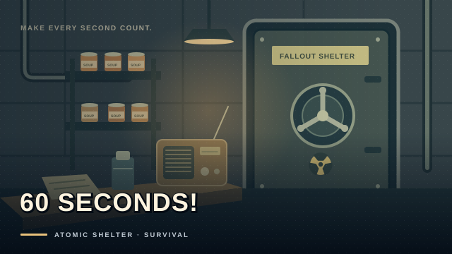
搜集物资，带上家人。
避难所里的每一天，都由你决定。
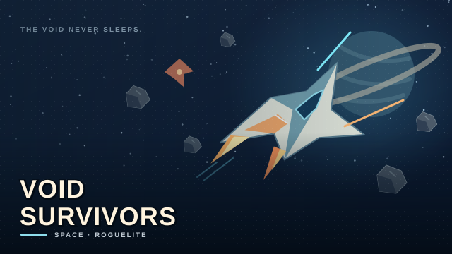
今日精选显示全部 12 款游戏
六十秒搜集物资，一家人躲进避难所。每一个决定，都关乎下一天。
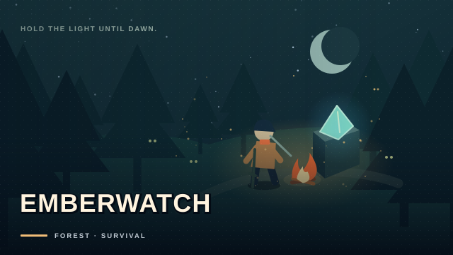
编辑精选提灯进入暮影森林，搭配技能抵御怪潮，守到黎明的第一束光。
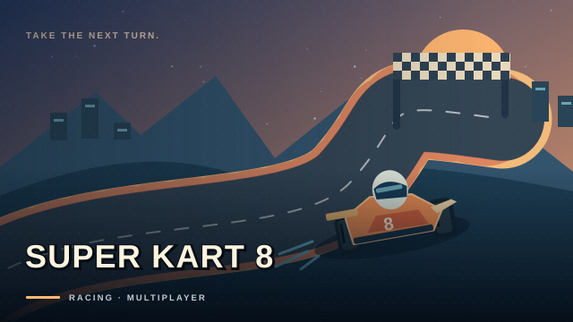
在二十条赛道上漂移、滑翔，用最后一个弯道完成绝地反超。
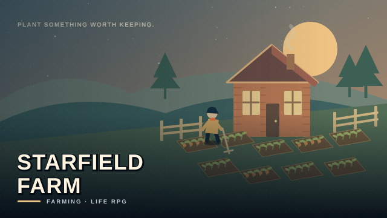
把星星种回土里。从一片旧农场出发，慢慢过上自己喜欢的生活。
穿越星云与密集弹幕，解锁十一种武器，让每次陨落都成为新的起点。
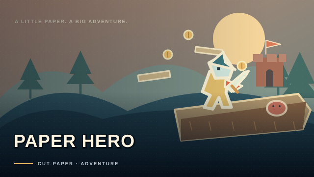
手绘纸片角色跳进红肠王国。叫上朋友，一起跨过悬崖、打败首领。
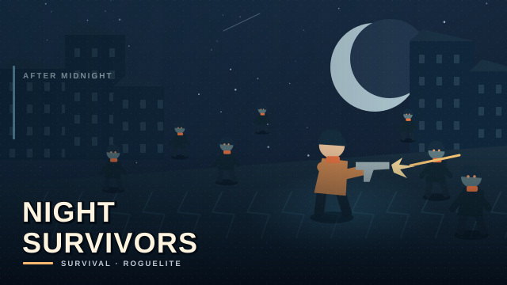
敌人从四面涌来。移动、射击、三选一升级，在黑夜里多活一秒。
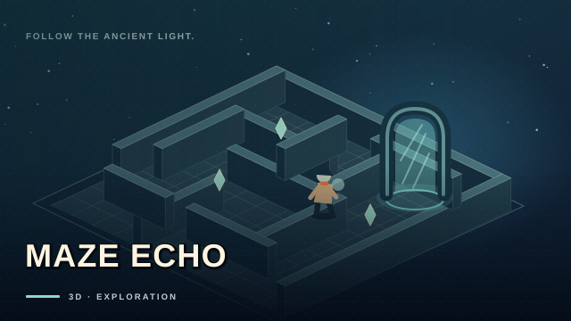
深入会移动的迷宫，寻找符文、破解机关，揭开封印之下的秘密。
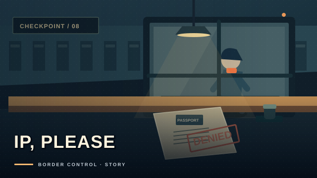
坐上东八区检查站的审查席，辨别每一份证件，写下自己的结局。
旧规一条不少，新规每天加一条。检查站的下一场荒诞故事开始了。
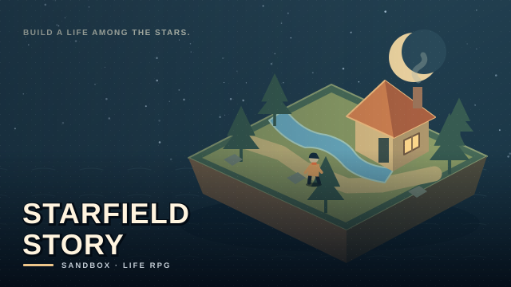
种田、探索、战斗、安家。在没有既定路线的像素世界里自由生活。
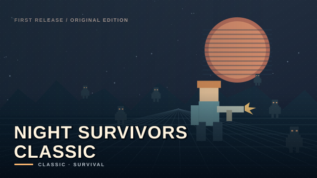
经典存档回到最初的夜晚。更轻量的版本，保留第一代的界面与生存手感。
试试其他关键词，或换一个分类看看。
《60 秒！重制版》UOS ARM64 兼容运行包，需要 Android 应用环境。
IP, PLEASE 与 IPO, PLEASE 为原团队开发的静态镜像；IP, PLEASE 使用 MIT 许可。暗夜幸存者由 wyc & DeepSeek 开发。纸片勇者角色为儿童手绘，代码与纸艺包装由 WorkBuddy 完成。其他作品说明见各游戏及仓库文档。首页封面为主题插画。《60 Seconds! Reatomized》提供原 Android APK 的兼容运行包，需要 Android 应用环境，尚未在 UOS 实机验证；游戏相关权利归原权利人。
登录后同步已接入游戏的进度。网页游戏沿用邀请码与开放时段规则。
账号已创建，但还没有激活游玩权限。
没有邀请码？找站长要。注册的账号不会丢，填上邀请码就能玩。
当前不在开放时段。
规则：法定节假日、寒暑假、周末全天开放；上学日 00:00–07:00 与 16:30–24:00 开放，周一/周二/周五提前到 15:15。